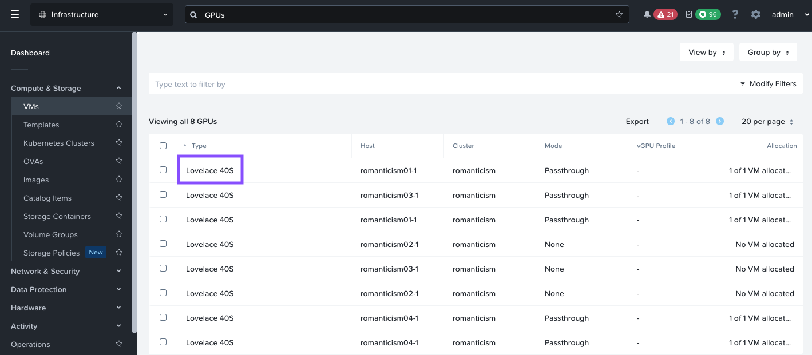

Deploy NKP Clusters
This section will take you through install NKP(Kubernetes) on Nutanix cluster as we will be deploying AI applications on these kubernetes clusters.
This section will expand to other available Kubernetes implementations on Nutanix.
stateDiagram-v2
direction LR
state DeployNKPk8s {
[*] --> CreateBootStrapCluster
CreateBootStrapCluster --> CreateNKPCluster
CreateNKPCluster --> DeployKommander
DeployKommander --> DeployGPUNodePool
DeployGPUNodePool --> [*]
}
PrepWorkstation --> DeployJumpHost
DeployJumpHost --> DeployNKPk8s
DeployNKPk8s --> DeployAIApps : Next sectionNKP High Level Cluster Design
The Bootstrap NKP cluster will be a temporary kind cluster that will be used to deploy the nkpdev cluster.
The nkpdev cluster will be hosting the LLM model serving endpoints and AI application stack. This cluster and will require a dedicated GPU node pool.
Once nkpdev deployment has been tested successfully, we can deploy applications to optional PROD Workload cluster.
Management Cluster
Since the Management Cluster called nkpmanage will be essential to deploying a workload nkpdev cluster.
We will use Kind cluster packaged by Nutanix to deploy the management cluster.
| Role | No. of Nodes (VM) | vCPU | RAM | Storage |
|---|---|---|---|---|
| Master | 1 | 4 | 6 GB | 150 GB |
| Worker | 2 | 4 | 6 GB | 150 GB |
Dev Workload Cluster
For nkpdev, we will deploy an NKP Cluster of with the following resources to be able to deploy LLama 8B LLM. See Sizing Requirements section of this site for more information.
| Role | No. of Nodes (VM) | vCPU | RAM | Storage |
|---|---|---|---|---|
| Master | 3 | 4 | 16 GB | 150 GB |
| Worker | 4 | 8 | 32 GB | 150 GB |
| GPU | 1 | 16 | 64 GB | 200 GB |
Pre-requisites for NKP Deployment
- Existing Jumphost VM. See here for installation steps
- Download and install
nkpbinary from Nutanix Portal - Find and reserve 3 IPs for control plane and MetalLB access from AHV network
- Find GPU details from Nutanix cluster
- Create a base image to use with NKP nodes using
nkpcommand
Install NKP Binaries
- Login to Nutanix Portal using your credentials
- Go to Downloads > Nutanix Kubernetes Platform (NKP)
- Select NKP for Linux and copy the download link to the
.tar.gzfile -
If you haven't already done so, Open new
VSCodewindow on your jumphost VM -
In
VSCodeExplorer pane, click on existing$HOMEfolder -
Click on New Folder name it:
nkp -
On
VSCodeExplorer plane, click the$HOME/nkpfolder -
On
VSCodemenu, selectTerminal>New Terminal -
Browse to
nkpdirectory -
Download and extract the NKP binary from the link you copied earlier
-
Move the
nkpbinary to a directory that is included in yourPATHenvironment variable -
Verify the
nkpbinary is installed correctly. Ensure the version is latestNote
At the time of writing this lab nkp version is
v2.16.0
Setup Docker on Jumphost
- From VSC, logon to your jumpbox VM
- Open VSC Terminal
-
Run the following commands to install
dockerbinariesTip
Restart the jumpbox host if
ubuntuuser has permission issues usingdockercommands.
Reserve Control Plane and MetalLB Endpoint IPs
Nutanix AHV IPAM network allows you to black list IPs that needs to be reserved for specific application endpoints. We will use this feature to find and reserve three IPs.
We will need a total of three IPs for the following:
| Cluster Role | Cluster Name | Control Plane IP | MetalLB IP |
|---|---|---|---|
| Manage | nkpmanage |
1 | 2 |
| Dev | nkpdev |
1 | 2 |
-
Get the CIDR range for the AHV network(subnet) where the application will be deployed
-
From VSC, logon to your jumpbox VM and open Terminal
-
Install
nmaptool (if not already done) -
Find six unused static IP addresses in the subnet
Sample output - choose the first three consecutive IPsNmap scan report for 10.x.x.210 [host down] Nmap scan report for 10.x.x.211 [host down] Nmap scan report for 10.x.x.212 [host down] Nmap scan report for 10.x.x.213 Host is up (-0.098s latency). Nmap scan report for 10.x.x.214 [host down] Nmap scan report for 10.x.x.215 [host down] Nmap scan report for 10.x.x.216 [host down] Nmap scan report for 10.x.x.217 Host is up (-0.098s latency). -
Logon to any CVM in your Nutanix cluster and execute the following to add chosen static IPs to the AHV IPAM network
- Username: nutanix
- Password: your Prism Element password
Optional - Find GPU Details
If there is a requirement to deploy workloads that rquire GPU, find the GPU details in your Nutanix cluster.
Find the details of GPU on the Nutanix cluster while still connected to Prism Central (PC).
- Logon to Prism Central GUI
- On the general search, type GPUs
-
Click on the GPUs result

-
Lovelace 40sis the GPU available for use - Use
Lovelace 40sin the evironment variables in the next section.
Create Base Image for NKP
In this section we will go through creating a base image for all the control plane and worker node VMs on Nutanix.
-
In VSC Explorer pane, Click on New Folder
-
Call the folder
nkpunder$HOMEdirectory -
In the
nkpfolder, click on New File and create new file with the following name: -
Fill the following values inside the
.envfileexport NUTANIX_USER=_your_nutanix_username export NUTANIX_PASSWORD=_your_nutanix_password export NUTANIX_ENDPOINT=_your_prism_central_cluster_name export NUTANIX_CLUSTER=_your_prism_element_cluster_name export NUTANIX_SUBNET_NAME=_your_ahv_ipam_network_name export STORAGE_CONTAINER=_your_storage_container_nmae export SSH_PUBLIC_KEY=_your_path_to_ssh_pub_key export CONTROLPLANE_VIP=_your_nkp_cluster_controlplane_ip export LB_IP_RANGE=_your_range_of_two_ipsexport NUTANIX_USER=admin export NUTANIX_PASSWORD=xxxxxxxx export NUTANIX_ENDPOINT=pc.example.com export NUTANIX_CLUSTER=pe export NUTANIX_SUBNET_NAME=User1 export STORAGE_CONTAINER=default export SSH_PUBLIC_KEY=$HOME/.ssh/id_rsa.pub export CONTROLPLANE_VIP=10.x.x.210 export LB_IP_RANGE=10.x.x.211-10.x.x.212 -
Using VSC Terminal, load the environment variables and its values
-
Create the base image and upload to Prism Central using the following command.
Note
Image creation will take up to 5 minutes.
nkp create image nutanix ubuntu-22.04 \ --endpoint pc.example.com --cluster pe \ --subnet User1 --insecure > Provisioning and configuring image Manifest files extracted to $HOME/nkp/.nkp-image-builder-3243021807 nutanix.kib_image: output will be in this color. ==> nutanix.kib_image: Creating Packer Builder virtual machine... nutanix.kib_image: Virtual machine nkp-ubuntu-22.04-1.29.6-20240717082720 created nutanix.kib_image: Found IP for virtual machine: 10.x.x.234 ==> nutanix.kib_image: Running post-processor: packer-manifest (type manifest) ---> 100% Build 'nutanix.kib_image' finished after 4 minutes 55 seconds. ==> Wait completed after 4 minutes 55 seconds ==> Builds finished. The artifacts of successful builds are: --> nutanix.kib_image: nkp-ubuntu-22.04-1.29.6-20240717082720 --> nutanix.kib_image: nkp-ubuntu-22.04-1.29.6-20240717082720 -
Populate the
.envfile with the NKP image name by adding (appending) the following environment variables and save itWarning
Make sure to use image name that is generated in your environment for the next steps.
Create a NKP Management K8S Cluster
In this section we will create a NKP Management (bootstrap) nkpmanage cluster.
Warning
We are creating the management cluster with minimal resoruces in this lab environment.
Consider adding additional control plane nodes and increasing CPU and memory of NKP management cluster for production environments as discussed in the Pre-requisites section.
-
Open .env file in VSC and add (append) the following environment variables to your
.envfile and save itexport NKP_MGT_CLUSTER_NAME=_name_of_nkp_management_cluster export CONTROL_PLANE_REPLICAS=_no_of_control_plane_replicas export CONTROL_PLANE_VCPUS=_no_of_control_plane_vcpus export CONTROL_PLANE_CORES_PER_VCPU=_no_of_control_plane_cores_per_vcpu export CONTROL_PLANE_MEMORY_GIB=_no_of_control_plane_memory_gib export WORKER_REPLICAS=_no_of_worker_replicas export WORKER_VCPUS=_no_of_worker_vcpus export WORKER_CORES_PER_VCPU=_no_of_worker_cores_per_vcpu export WORKER_MEMORY_GIB=_no_of_worker_memory_gib export CSI_FILESYSTEM=_preferred_filesystem_ext4/xfs export CSI_HYPERVISOR_ATTACHED=_true/false export DOCKER_USERNAME=_your_docker_username export DOCKER_PASSWORD=_your_docker_password export NUTANIX_PROJECT_NAME=_your_pc_project_nameexport NKP_MGT_CLUSTER_NAME=nkpmanage export CONTROL_PLANE_REPLICAS=1 export CONTROL_PLANE_VCPUS=4 export CONTROL_PLANE_CORES_PER_VCPU=1 export CONTROL_PLANE_MEMORY_GIB=6 export WORKER_REPLICAS=2 export WORKER_VCPUS=4 export WORKER_CORES_PER_VCPU=1 export WORKER_MEMORY_GIB=6 export CSI_FILESYSTEM=ext4 export CSI_HYPERVISOR_ATTACHED=true export DOCKER_USERNAME=_your_docker_username export DOCKER_PASSWORD=_your_docker_password export NUTANIX_PROJECT_NAME=dev-lab -
Source the new variables and values to the environment
-
In VSC, open Terminal, enter the following command to create the management cluster
Optional - Check your command for correct argument values
Run the following command to verify your
nkpcommand and associated environment variables and values.echo "nkp create cluster nutanix -c ${NKP_MGT_CLUSTER_NAME} \ --control-plane-endpoint-ip ${CONTROLPLANE_VIP} \ --control-plane-prism-element-cluster ${NUTANIX_CLUSTER} \ --control-plane-subnets ${NUTANIX_SUBNET_NAME} \ --control-plane-vm-image ${NKP_IMAGE} \ --csi-storage-container ${STORAGE_CONTAINER} \ --endpoint https://${NUTANIX_ENDPOINT}:9440 \ --worker-prism-element-cluster ${NUTANIX_CLUSTER} \ --worker-subnets ${NUTANIX_SUBNET_NAME} \ --worker-vm-image ${NKP_IMAGE} \ --ssh-public-key-file ${SSH_PUBLIC_KEY} \ --kubernetes-service-load-balancer-ip-range ${LB_IP_RANGE} \ --control-plane-disk-size 150 --control-plane-memory ${CONTROL_PLANE_MEMORY_GIB} --control-plane-vcpus ${CONTROL_PLANE_VCPUS} --control-plane-cores-per-vcpu ${CONTROL_PLANE_CORES_PER_VCPU} \ --worker-disk-size 150 --worker-memory ${WORKER_MEMORY_GIB} --worker-vcpus ${WORKER_VCPUS} --worker-cores-per-vcpu ${WORKER_CORES_PER_VCPU} \ --csi-file-system ${CSI_FILESYSTEM} \ --csi-hypervisor-attached-volumes=${CSI_HYPERVISOR_ATTACHED} \ --registry-mirror-url "https://registry-1.docker.io" \ --registry-mirror-username ${DOCKER_USERNAME} \ --registry-mirror-password ${DOCKER_PASSWORD} \ --control-plane-pc-project ${NUTANIX_PROJECT_NAME} \ --worker-pc-project ${NUTANIX_PROJECT_NAME} \ --insecure"If the values are incorrect, source the
.envfile again by running the following commandThen rerun the
echo nkpcommand to verify the values again before running thenkp create cluster nutanixcommand.nkp create cluster nutanix -c ${NKP_MGT_CLUSTER_NAME} \ --control-plane-endpoint-ip ${CONTROLPLANE_VIP} \ --control-plane-prism-element-cluster ${NUTANIX_CLUSTER} \ --control-plane-subnets ${NUTANIX_SUBNET_NAME} \ --control-plane-vm-image ${NKP_IMAGE} \ --csi-storage-container ${STORAGE_CONTAINER} \ --endpoint https://${NUTANIX_ENDPOINT}:9440 \ --worker-prism-element-cluster ${NUTANIX_CLUSTER} \ --worker-subnets ${NUTANIX_SUBNET_NAME} \ --worker-vm-image ${NKP_IMAGE} \ --ssh-public-key-file ${SSH_PUBLIC_KEY} \ --kubernetes-service-load-balancer-ip-range ${LB_IP_RANGE} \ --control-plane-disk-size 150 --control-plane-memory ${CONTROL_PLANE_MEMORY_GIB} --control-plane-vcpus ${CONTROL_PLANE_VCPUS} --control-plane-cores-per-vcpu ${CONTROL_PLANE_CORES_PER_VCPU} \ --worker-disk-size 150 --worker-memory ${WORKER_MEMORY_GIB} --worker-vcpus ${WORKER_VCPUS} --worker-cores-per-vcpu ${WORKER_CORES_PER_VCPU} \ --csi-file-system ${CSI_FILESYSTEM} \ --csi-hypervisor-attached-volumes=${CSI_HYPERVISOR_ATTACHED} \ --registry-mirror-url "https://registry-1.docker.io" \ --registry-mirror-username ${DOCKER_USERNAME} \ --registry-mirror-password ${DOCKER_PASSWORD} \ --control-plane-pc-project ${NUTANIX_PROJECT_NAME} \ --worker-pc-project ${NUTANIX_PROJECT_NAME} \ --insecure \ --self-managed> Creating a bootstrap cluster Upgrading CAPI components Waiting for CAPI components to be upgraded Initializing new CAPI components Creating ClusterClass resources Creating ClusterClass resources > Generating cluster resources cluster.cluster.x-k8s.io/nkpdev created secret/nkpdev-pc-credentials created secret/nkpdev-pc-credentials-for-csi created secret/nkpdev-image-registry-credentials created Waiting for cluster infrastructure to be ready Waiting for cluster control-planes to be ready Waiting for machines to be ready Initializing new CAPI components Creating ClusterClass resources Moving cluster resources > You can now view resources in the moved cluster by using the --kubeconfig flag with kubectl. For example: kubectl --kubeconfig="$HOME/nkp/nkpdev.conf" get nodes > Deleting bootstrap cluster Cluster default/nkpdev kubeconfig was written to to the filesystem. You can now view resources in the new cluster by using the --kubeconfig flag with kubectl. For example: kubectl --kubeconfig="$HOME/nkp/nkpdev.conf" get nodes > Starting kommander installation Deploying Flux Deploying Ingress certificate Creating kommander-overrides ConfigMap Deploying Git Operator Creating GitClaim for management GitRepository Creating GitClaimUser for accessing management GitRepository Creating HTTP Proxy configuration Deploying Flux configuration Deploying Kommander Operator Creating KommanderCore resource Cleaning up kommander bootstrap resources Deploying Substitution variables Deploying Flux configuration Deploying Gatekeeper Deploying Kommander AppManagement Creating Core AppDeployments 4 out of 12 core applications have been installed (waiting for dex, dex-k8s-authenticator and 6 more) 5 out of 12 core applications have been installed (waiting for dex-k8s-authenticator, kommander and 5 more) 7 out of 12 core applications have been installed (waiting for dex-k8s-authenticator, kommander and 3 more) 8 out of 12 core applications have been installed (waiting for dex-k8s-authenticator, kommander-ui and 2 more) 9 out of 12 core applications have been installed (waiting for dex-k8s-authenticator, kommander-ui and 1 more) 10 out of 12 core applications have been installed (waiting for dex-k8s-authenticator, traefik-forward-auth-mgmt) 11 out of 12 core applications have been installed (waiting for traefik-forward-auth-mgmt) Creating cluster-admin credentials > Cluster was created successfully! Get the dashboard details with: > nkp get dashboard --kubeconfig="$HOME/nkp/nkpmanage.conf"Self-Manged Cluster??
The
--self-managedargument of thenkp create cluster nutanixcommand will deploy bootstrap, and Kommander management automatically.The appendix section has information on how to deploy a cluster without using the
--self-managedoption.Usually preferred by customer DevOps teams to have more control over the deployment process. This way the customer can do the following:
- Deploy bootstrap (
Kind) cluster - Deploy NKP Management cluster
- Choose to migrate the CAPI components over to NKP Management cluster
- Choose to deploy workload clusters from NKP Kommander GUI or
- Choose to deploy workload clusters using scripts to automate the process
- Deploy bootstrap (
-
Observe the events in the shell and in Prism Central events
-
Export kubeconfig file for mangement cluster. This file would be present in the same directory where the
nkp create cluster nutanix -c nkpmanage ...command was run -
Check connectivity to the NKP Managment cluster
-
Get management cluster's dashboard credentials to login to the NKP UI
License Management Cluster
It is necessary to install license to the Management Cluster nkpmanage to be able to deploy workload clusters. Especially if the OS of the workload clusters' nodes is going to be Ubuntu
Follow the steps in this document to create and apply licenses on the management cluster.
Note
This Pro/Ultimate licensing requirement to deploy workload clusters with Ubuntu OS may change in the future. We will be sure to update here.
Create NKP Workload Cluster
- In
VSCode, create a new file.env_workload -
Open
.env_workloadfile in VSC and add (append) the following environment variables and save itexport NKP_WORKLOAD_CLUSTER_NAME=_workload_nkp_clustername export CONTROL_PLANE_REPLICAS=_no_of_control_plane_replicas export CONTROL_PLANE_VCPUS=_no_of_control_plane_vcpus export CONTROL_PLANE_CORES_PER_VCPU=_no_of_control_plane_cores_per_vcpu export CONTROL_PLANE_MEMORY_GIB=_no_of_control_plane_memory_gib export WORKER_REPLICAS=_no_of_worker_replicas export WORKER_VCPUS=_no_of_worker_vcpus export WORKER_CORES_PER_VCPU=_no_of_worker_cores_per_vcpu export WORKER_MEMORY_GIB=_no_of_worker_memory_gib export CSI_FILESYSTEM=_preferred_filesystem_ext4/xfs export CSI_HYPERVISOR_ATTACHED=_true/false export NUTANIX_PROJECT_NAME=_your_pc_project_name export CONTROLPLANE_VIP=_your_nkp_cluster_controlplane_ip export LB_IP_RANGE=_your_range_of_two_ipsexport NKP_WORKLOAD_CLUSTER_NAME=nkpdev export CONTROL_PLANE_REPLICAS=3 export CONTROL_PLANE_VCPUS=4 export CONTROL_PLANE_CORES_PER_VCPU=1 export CONTROL_PLANE_MEMORY_GIB=16 export WORKER_REPLICAS=4 export WORKER_VCPUS=8 export WORKER_CORES_PER_VCPU=1 export WORKER_MEMORY_GIB=32 export CSI_FILESYSTEM=ext4 export CSI_HYPERVISOR_ATTACHED=true export NUTANIX_PROJECT_NAME=dev-lab export CONTROLPLANE_VIP=10.x.x.214 export LB_IP_RANGE=10.x.x.215-10.x.x.216 -
Source the new variables and values to the environment
Warning
All the previous environment variable values will be replaced by this action.
Since we do not need the management clusters' configuration values, this is acceptable. However, do consider how to manage environment variables in a production environment.
-
In VSC, open Terminal, enter the following command to create the workload cluster
Optional - Check your command for correct argument values
Run the following command to verify your
nkpcommand and associated environment variables and values.echo "nkp create cluster nutanix -c ${NKP_WORKLOAD_CLUSTER_NAME} \ --control-plane-endpoint-ip ${CONTROLPLANE_VIP} \ --control-plane-prism-element-cluster ${NUTANIX_CLUSTER} \ --control-plane-subnets ${NUTANIX_SUBNET_NAME} \ --control-plane-vm-image ${NKP_IMAGE} \ --csi-storage-container ${STORAGE_CONTAINER} \ --endpoint https://${NUTANIX_ENDPOINT}:9440 \ --worker-prism-element-cluster ${NUTANIX_CLUSTER} \ --worker-subnets ${NUTANIX_SUBNET_NAME} \ --worker-vm-image ${NKP_IMAGE} \ --ssh-public-key-file ${SSH_PUBLIC_KEY} \ --kubernetes-service-load-balancer-ip-range ${LB_IP_RANGE} \ --control-plane-disk-size 150 --control-plane-memory ${CONTROL_PLANE_MEMORY_GIB} --control-plane-vcpus ${CONTROL_PLANE_VCPUS} --control-plane-cores-per-vcpu ${CONTROL_PLANE_CORES_PER_VCPU} \ --worker-disk-size 150 --worker-memory ${WORKER_MEMORY_GIB} --worker-vcpus ${WORKER_VCPUS} --worker-cores-per-vcpu ${WORKER_CORES_PER_VCPU} \ --csi-file-system ${CSI_FILESYSTEM} \ --csi-hypervisor-attached-volumes=${CSI_HYPERVISOR_ATTACHED} \ --registry-mirror-url "https://registry-1.docker.io" \ --registry-mirror-username ${DOCKER_USERNAME} \ --registry-mirror-password ${DOCKER_PASSWORD} \ --control-plane-pc-project ${NUTANIX_PROJECT_NAME} \ --worker-pc-project ${NUTANIX_PROJECT_NAME} \ --insecure"If the values are incorrect, source the
.envfile again by running the following commandThen rerun the
echo nkpcommand to verify the values again before running thenkp create cluster nutanixcommand.nkp create cluster nutanix -c ${NKP_WORKLOAD_CLUSTER_NAME} \ --control-plane-endpoint-ip ${CONTROLPLANE_VIP} \ --control-plane-prism-element-cluster ${NUTANIX_CLUSTER} \ --control-plane-subnets ${NUTANIX_SUBNET_NAME} \ --control-plane-vm-image ${NKP_IMAGE} \ --csi-storage-container ${STORAGE_CONTAINER} \ --endpoint https://${NUTANIX_ENDPOINT}:9440 \ --worker-prism-element-cluster ${NUTANIX_CLUSTER} \ --worker-subnets ${NUTANIX_SUBNET_NAME} \ --worker-vm-image ${NKP_IMAGE} \ --ssh-public-key-file ${SSH_PUBLIC_KEY} \ --kubernetes-service-load-balancer-ip-range ${LB_IP_RANGE} \ --control-plane-disk-size 150 --control-plane-memory ${CONTROL_PLANE_MEMORY_GIB} --control-plane-vcpus ${CONTROL_PLANE_VCPUS} --control-plane-cores-per-vcpu ${CONTROL_PLANE_CORES_PER_VCPU} \ --worker-disk-size 150 --worker-memory ${WORKER_MEMORY_GIB} --worker-vcpus ${WORKER_VCPUS} --worker-cores-per-vcpu ${WORKER_CORES_PER_VCPU} \ --csi-file-system ${CSI_FILESYSTEM} \ --csi-hypervisor-attached-volumes=${CSI_HYPERVISOR_ATTACHED} \ --registry-mirror-url "https://registry-1.docker.io" \ --registry-mirror-username ${DOCKER_USERNAME} \ --registry-mirror-password ${DOCKER_PASSWORD} \ --control-plane-pc-project ${NUTANIX_PROJECT_NAME} \ --worker-pc-project ${NUTANIX_PROJECT_NAME} \ --insecureUpgrading CAPI components Waiting for CAPI components to be upgraded Initializing new CAPI components Creating ClusterClass resources Creating ClusterClass resources > Generating cluster resources cluster.cluster.x-k8s.io/nkpdev created secret/nkpdev-pc-credentials created secret/nkpdev-pc-credentials-for-csi created secret/nkpdev-image-registry-credentials created Waiting for cluster infrastructure to be ready Waiting for cluster control-planes to be ready Waiting for machines to be ready Initializing new CAPI components Creating ClusterClass resources Moving cluster resources > You can now view resources in the moved cluster by using the --kubeconfig flag with kubectl. For example: kubectl --kubeconfig="$HOME/nkp/nkpdev.conf" get nodes > Deleting bootstrap cluster Cluster default/nkpdev kubeconfig was written to to the filesystem. You can now view resources in the new cluster by using the --kubeconfig flag with kubectl. For example: kubectl --kubeconfig="$HOME/nkp/nkpdev.conf" get nodes > Cluster was created successfully! Get the dashboard details with: > nkp get dashboard --kubeconfig="$HOME/nkp/nkpdev.conf"Self-Manged Cluster??
The
--self-managedargument of thenkp create cluster nutanixcommand will deploy bootstrap, and Kommander management automatically.However, we are specifically not using it here in this lab, to run through Kommander installation later.
-
Observe the events in the shell and in Prism Central events
-
Store kubeconfig files for the workload cluster
-
Combine the management and workload clusters
KUBECONFIGfile so that we can use it withkubectxcommand to change context between clusters -
Run the following command to check K8S status of the
nkpdevcluster$ kubectl get nodes NAME STATUS ROLES AGE VERSION nkpdev-md-0-x948v-hvxtj-9r698 Ready <none> 4h49m v1.29.6 nkpdev-md-0-x948v-hvxtj-fb75c Ready <none> 4h50m v1.29.6 nkpdev-md-0-x948v-hvxtj-mdckn Ready <none> 4h49m v1.29.6 nkpdev-md-0-x948v-hvxtj-shxc8 Ready <none> 4h49m v1.29.6 nkpdev-r4fwl-8q4ch Ready control-plane 4h50m v1.29.6 nkpdev-r4fwl-jf2s8 Ready control-plane 4h51m v1.29.6 nkpdev-r4fwl-q888c Ready control-plane 4h49m v1.29.6 -
Get dashboard URL and login credentials for the workload cluster
Create NKP GPU Workload Pool
In this section we will create a nodepool to host the AI apps with a GPU.
-
Change KUBECONFIG context to use the workload
nkpmanagecluster if not already there. -
Open .env file in VSC and add (append) the following environment variables to your
.envfile and save it -
Source the new variables and values to the environment
-
Run the following command to create a GPU nodepool manifest
nkp create nodepool nutanix \ --cluster-name ${NKP_WORKLOAD_CLUSTER_NAME} \ --prism-element-cluster ${NUTANIX_CLUSTER} \ --subnets ${NUTANIX_SUBNET_NAME} \ --vm-image ${NKP_IMAGE} \ --disk-size 200 \ --memory 40 \ --vcpus 16 \ --replicas ${GPU_REPLICA_COUNT} \ --wait \ ${GPU_POOL} --dry-run -o yaml > gpu-nodepool.yamlNote
Right now there is no switch for GPU in
nkpcommand. We need to do dry-run the output into a file and then add the necessary GPU specifications -
Add the necessary gpu section to our new
gpu-nodepool.yamlusingyqcommandyq e '(.spec.topology.workers.machineDeployments[] | select(.name == "gpu-nodepool").variables.overrides[] | select(.name == "workerConfig").value.nutanix.machineDetails) += {"gpus": [{"type": "name", "name": strenv(GPU_NAME)}]}' -i gpu-nodepool.yamlSuccessful addtion of GPU specs?
You would be able to see the added gpu section at the end of the
gpu-nodepool.yamlfileapiVersion: cluster.x-k8s.io/v1beta1 kind: Cluster <snip> name: gpu-nodepool variables: overrides: - name: workerConfig value: nutanix: machineDetails: bootType: legacy cluster: name: romanticism type: name image: name: nkp-ubuntu-22.04-1.29.6-20240718055804 type: name memorySize: 64Gi subnets: - name: User1 type: name systemDiskSize: 200Gi vcpuSockets: 2 vcpusPerSocket: 8 gpus: - type: name name: Lovelace 40S -
Apply the
gpu-nodepool.yamlfile to the workload cluster -
Monitor the progress of the command and check Prism Central events for creation of the GPU worker node
Change to workload
nkpdevcluster context -
Check nodes status in workload
nkpdevcluster and note the gpu worker node$ kubectl get nodes NAME STATUS ROLES AGE VERSION nkpdev-gpu-nodepool-7g4jt-2p7l7-49wvd Ready <none> 5m57s v1.29.6 nkpdev-md-0-q679c-khl2n-9k7jk Ready <none> 74m v1.29.6 nkpdev-md-0-q679c-khl2n-9nk6h Ready <none> 74m v1.29.6 nkpdev-md-0-q679c-khl2n-nf9p6 Ready <none> 73m v1.29.6 nkpdev-md-0-q679c-khl2n-qgxp9 Ready <none> 74m v1.29.6 nkpdev-ncnww-2dg7h Ready control-plane 73m v1.29.6 nkpdev-ncnww-bbm4s Ready control-plane 72m v1.29.6 nkpdev-ncnww-hldm9 Ready control-plane 75m v1.29.6
Now we are ready to deploy our AI workloads.
Optional - Cleanup
Optionally, cleanup the workloads on nkp cluster by deleting it after deploying and testing your AI/ML application.
-
Change cluster context to use the workload
bootstrapcluster -
Delete the workload cluster
nkp delete cluster -c nkpdev Upgrading CAPI components Waiting for CAPI components to be upgraded Initializing new CAPI components Creating ClusterClass resources Creating ClusterClass resources Moving cluster resources Waiting for cluster infrastructure to be ready Waiting for cluster control-planes to be ready Waiting for machines to be ready Deleting cluster resources Waiting for cluster to be fully deleted Deleted default/nkpdev cluster
Info
If the workload cluster was created as self-managed, then the following command will delete the cluster by creating a small bootstrap cluster. This bootstrap cluster will also be deleted automatically after the workload cluster is deleted.